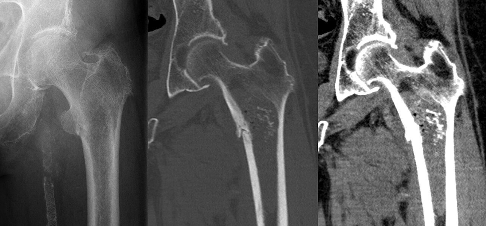

Ficha del catálogo
Condrosarcoma
- Sistema
- Óseo
- Modalidad
- TC
- Región
- Pelvis y huesos largos proximales
- Dificultad
- Avanzado
El condrosarcoma es el tumor óseo maligno productor de cartílago y afecta sobre todo a adultos de edad media y avanzada, a diferencia de los sarcomas óseos del adolescente. Se localiza con preferencia en pelvis, fémur proximal, húmero proximal y costillas. Puede aparecer de novo o desarrollarse sobre una lesión cartilaginosa previa como un osteocondroma o un encondroma. Crece con lentitud y responde mal a la quimioterapia, de modo que el tratamiento es esencialmente quirúrgico y la valoración de la extensión resulta decisiva.
Técnica
Tomografía con contraste que abarque todo el hueso afectado y las partes blandas vecinas, con reconstrucciones multiplanares y ventana ósea.
Qué observar
- Lesión lítica con calcificaciones en anillos y arcos propias de la matriz cartilaginosa
- Festoneado endóstico profundo que supera dos tercios del grosor cortical
- Rotura cortical y masa de partes blandas con componente no calcificado
- Engrosamiento del casquete cartilaginoso cuando asienta sobre un osteocondroma
- Tamaño superior a varios centímetros y extensión longitudinal amplia
- Cambios respecto a estudios previos que documenten crecimiento
Hallazgos
Masa ósea destructiva con matriz cartilaginosa calcificada, festoneado endóstico profundo, rotura cortical y componente de partes blandas.
Perlas
Distinguir un encondroma de un condrosarcoma de bajo grado es uno de los problemas clásicos de la radiología musculoesquelética. Pesan a favor de malignidad el dolor sin causa mecánica, la localización axial o proximal, el tamaño grande, el festoneado profundo y el crecimiento documentado.
Diagnóstico diferencial
- Encondroma
- Menor tamaño, sin dolor, festoneado superficial y cortical íntegra.
- Osteosarcoma
- Matriz de aspecto algodonoso, paciente más joven y reacción perióstica agresiva.
- Metástasis ósea
- Lesiones múltiples sin matriz condroide y tumor primario conocido.
Simuladores
- Infarto óseo extenso con calcificaciones
- Osteocondroma con casquete calcificado prominente
- Calcificaciones de partes blandas por otras causas
Por modalidad
- RX
- Detección inicial y valoración de la matriz
- TC
- Define la matriz calcificada, la cortical y la extensión
- RM
- Mide la extensión medular y de partes blandas para planificar la cirugía
Protocolo
Radiografía inicial seguida de tomografía y resonancia de todo el hueso. La biopsia debe coordinarse con el equipo quirúrgico para no comprometer el abordaje posterior.
Clasificación
Se gradúan por criterios histológicos en grados de menor a mayor agresividad y se distinguen formas centrales, periféricas sobre osteocondroma y variantes especiales.
Errores frecuentes
- Informar como encondroma una lesión cartilaginosa grande y dolorosa del esqueleto axial
- Realizar una biopsia sin coordinación con la unidad que operará al paciente
- No comparar con estudios previos disponibles para valorar el crecimiento

condrosarcoma matriz condroide anillos y arcos festoneado endostico tumor maligno pelvis biopsia